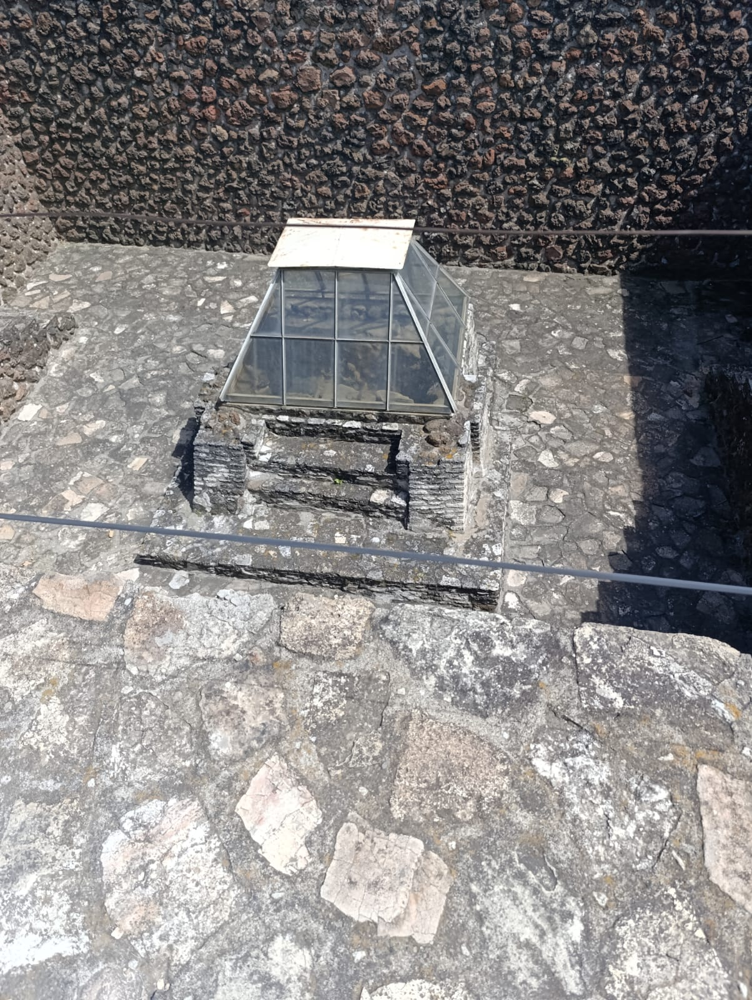

Archivo 01 · Puebla
Guía turística digital / 2026
Descubriendo
Cholula
Un recorrido histórico con Inteligencia Artificial
“Conocer el patrimonio es el primer paso para protegerlo.”
01 Contexto
Una ciudad hecha
de memorias
Cholula es un territorio donde conviven la arquitectura prehispánica, el paisaje colonial y la vida actual. Su historia no pertenece solo al pasado: continúa en cada visita, tradición y forma de cuidar el lugar.
historia
de la base
en el paisaje
ARCHIVO / 001

02 Estación del recorrido
Zona arqueológica
Tlachihualtépetl

LugarHistoriaCultura
El cerro hecho a mano
Tlachihualtépetl significa “cerro hecho a mano”. La pirámide fue ampliada en distintas etapas. Por eso, al recorrerla podemos ver cómo varias generaciones construyeron sobre una misma ciudad sagrada.
Características
Patios ceremoniales, altares, escalones y túneles.
Importancia cultural
Guarda la memoria de una ciudad de intercambio y ritual.
Dato interesante
Es reconocida por tener una de las bases más grandes del mundo.
Conservación: no tocar ni escalar fuera de las rutas permitidas ayuda a proteger los muros y superficies antiguas.
03 Evidencia de campo
Lo que vi
lo aprendí

Escultura protectora y evidencia de trabajo artesanal.

Una cubierta moderna protege parte del patrimonio.
Experiencia sonora
Al dar palmadas, el espacio amplifica la vibración y produce un efecto que puede parecer un sonido parecido al de un pato. La explicación de por qué ocurre pertenece al sonido y la forma del recinto.
07 · Conclusión
Cholula no es
solo una pirámide
Es una historia viva que merece ser conocida, verificada y cuidada.
Mario Mora Valdez